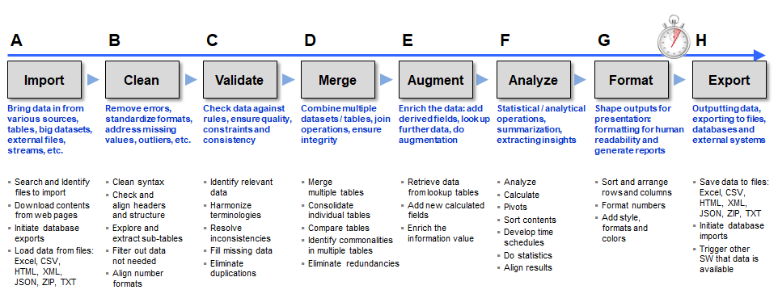

Overview
The B4P language is a very compact and powerful programming language aiming to solve challenging data processing problems involving large amounts of data. The language contains specific syntax and semantic structures which are key enablers for rapid programming, high comprehensibility and exceptionally high performance. Your key benefits are:
- Simple procedural language.
- Very easy to read and understand the code, therfore very easy to learn programming.
- Powerful language semantics minimizes the number of statements needed to solve the problem.
- Very quickly to get your code running
- Be natural and less cryptic. Giver your variables, tables, functions, etc. natural names (spaces are allowed)
- Tables of any size are one of the main data storage models and B4P is optimized for this.
- No programming bureaucracy such as type definitions, declaring all the variables and doing memory management on your own.
- Significantly less need for fine grained programming like formulating loops, detailed algorithms, etc.
- B4P understands data formats such as Excel, HTML, XML, JSON, CSV, etc. to retrieve data from Excel, database and the Internet directly
- The run-time machine and all libary files are very lean, very robust and start quickly.
- High focus on cross-platform portability (Windows, Linux, MacOS, etc.), enabling to run the same code on different platforms.
- B4P output files for Excel can contain style and formatting like colors, row widths, etc.
You will get to full speed quickly if you have some basic programming experience with a high level programming language or a macro
language such as Visual Basic inside Excel. B4P requires no knowledge about object oriented programming and specific algorithms to manage
big data (e.g. indexing, memory management). The syntax is, even though looking differently from other languages, incredibly easy to understand and to use.
In contrast to other programming langages, much fewer statements and time are needed, no additional libraries need to be installed
separately (like Panda for Python) and you experience unparalleled machine performance, forgetting the fact that B4P is an interpreted language.
B4P lets you focus on solving your key problems quickly, and not getting stuck with details:

By experience, successful solutions have been provided already during the first consultation with colleagues who needed solutions for
their data processing needs. They originally expected a cost and time estimation and a project plan for the project in order to approve the
budget for hiring programmers or consultants, and all that ended up not necessary at all because a few lines of code solved the problem
and a lot of money saved.